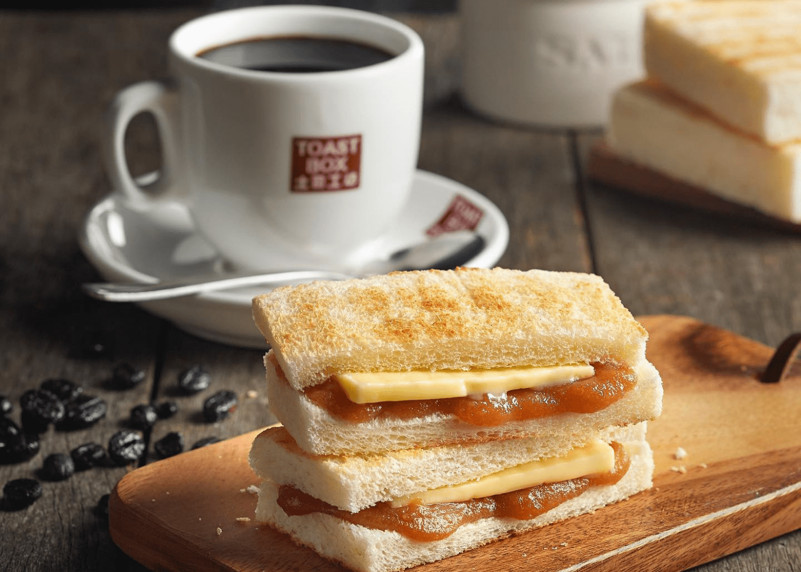
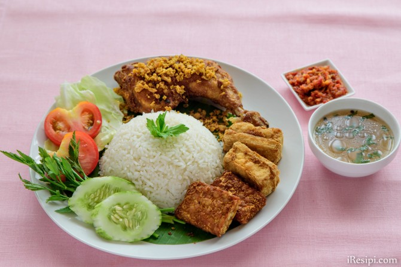
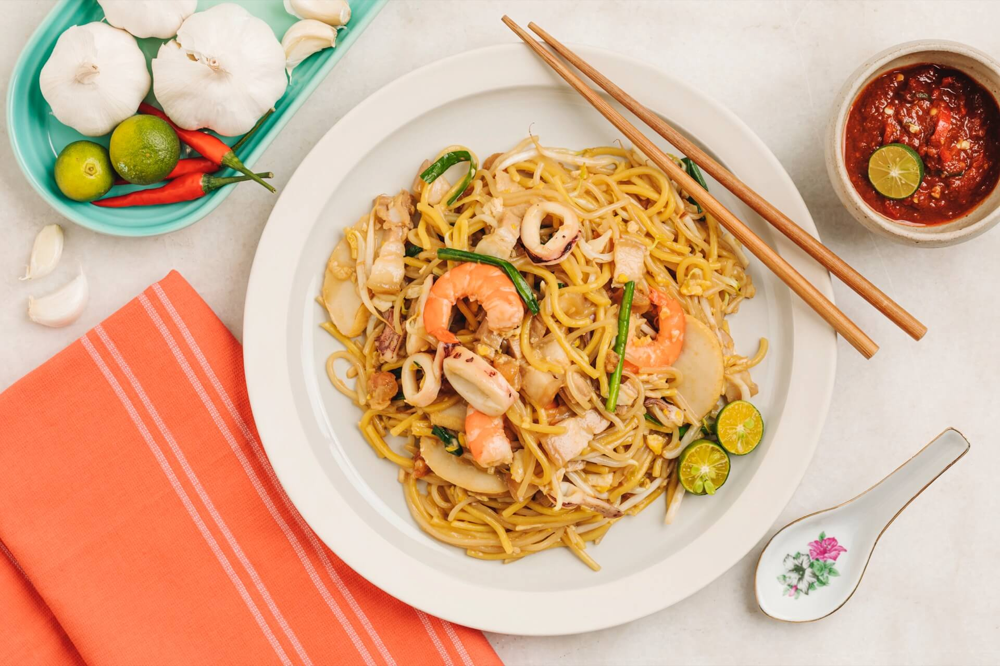
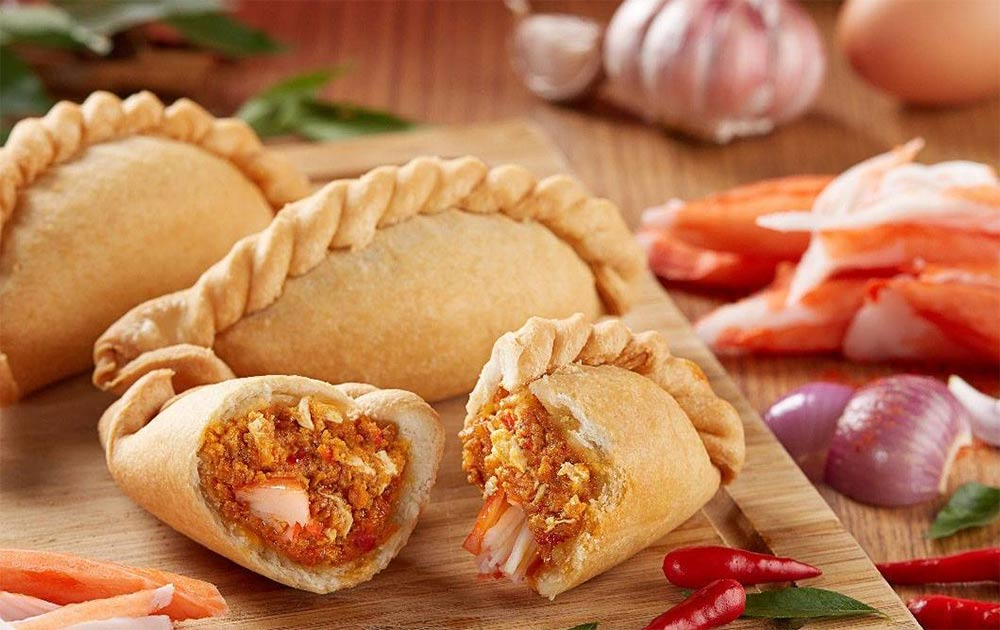
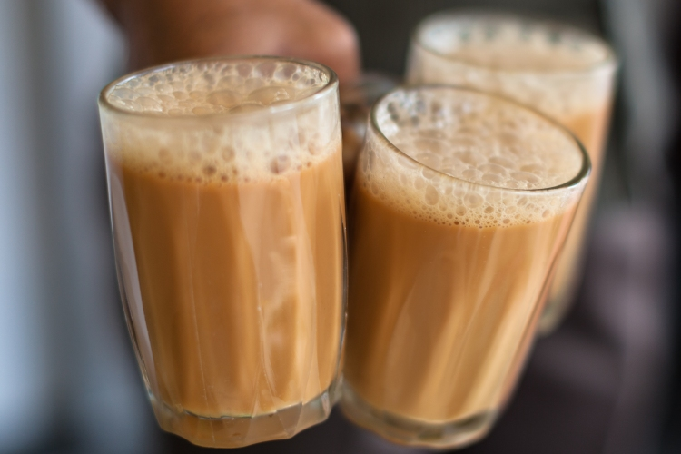

Breakfast

The typical Singaporean breakfast consists of coffee, toast, and soft-boiled eggs with a generous dash of dark soy sauce and pepper. However, the magical element is the filling in the toast - kaya. Kaya is a sweet coconut jam made with coconut milk, eggs, and sugar. It is popular in the Southeast Asia region, and different cultures have made subtle additions to the jam over the years. The Peranakan Nyonya kaya has a rich green colour, while the Hainanese kaya is slightly more brown - details that no one really notice in the morning when they munch on their toast and try to stay awake.
Click to find out more and see how Kaya is made!
Lunch

Singaporeans cannot live without rice or noodles, and either (sometimes both!) staple makes an appearance during mealtimes. Nasi Ayam, or Chicken Rice, is a classic comfort dish for Singaporeans. It consists of many key players, each with a crucial role in ensuring the success of the dish. The rice is cooked with chicken stock and spices, and the chilli is blended with tomatoes and ginger. The chicken is the belle of the ball, and is prepared in many ways. Hainanese chicken rice demands for the chicken to be poached, while the Indonesians fry and smash it. I personally enjoy watching my fried chicken get smashed before it is served to me, but each to their own.
Click for the recipe! (Smashing not included)
Dinner

Have you ever been in the mood for rice noodles and egg noodles, that is dry but not soupy, and has an abundance of flavour? You'd probably want to give Hokkien Noodles a go. The noodles are cooked in a special broth made from prawn heads and shells, and usually comes with seafood.
Snacks

As said earlier, Singaporeans live and breathe carbs, and one of our hobbies is to come up with ways of incorporating carbs into our food outside of the three main meals. Enter curry puffs, the southeast asian sister of empanadas. A fried dough case with spiced potatoes, chicken, and egg - there are plain potato versions and sardine curry puffs too!
To see how you can make your own curry puffs, click here!
Drinks

'Teh tarik' means pulled tea in Malay - you pour your tea from one cup to another in an elongated fashion, making the tea nice and frothy. It is also made with either condensed milk or evaporated milk, because we really, really like our sugar. Having teh is not just drinking tea - it makes up the fabric of society. Singaporeans can easily get through four cups of teh tarik a day on average, especially when hanging out with friends at a coffee shop at 3am. One would think that the coffee shops would be empty at such ungodly hours, but that is when the country really thrives, thanks to a supremely unhealthy ingestion of caffeine.